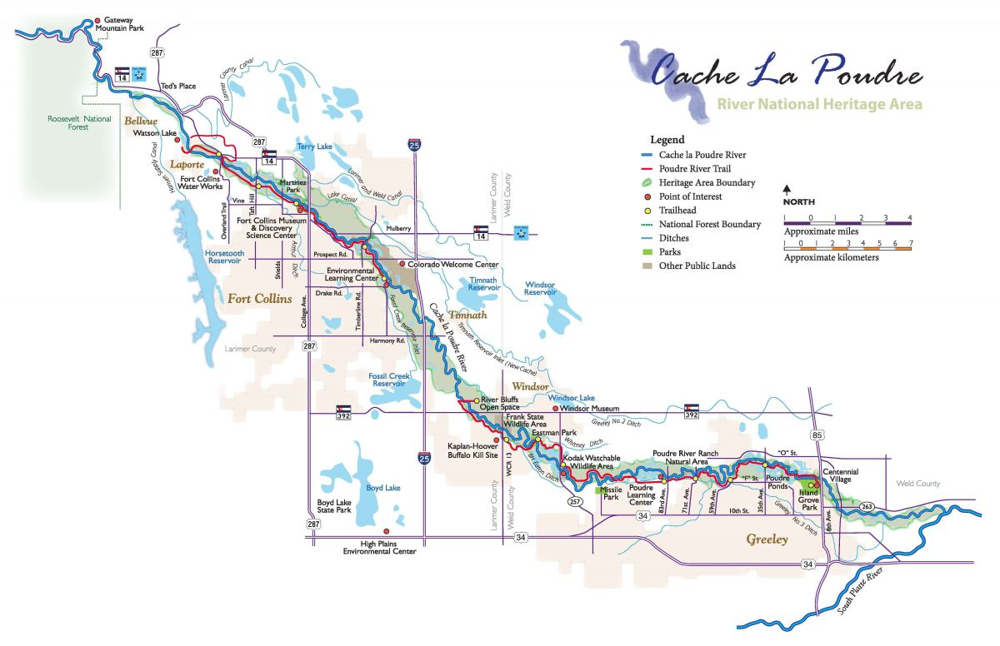

Lab 6: Timeseries Data
Using Modeltime to predict future streamflow on the Cache la Poudre River
Introduction
In this lab you will download streamflow data from the Cache la Poudre River (USGS site 06752260) and analyze it using the time series methods introduced in lecture. You will then use modeltime to predict future streamflow using both the time structure of the series and exogenous climate predictors.
This mirrors the Lees Ferry forecasting example from lecture — same dataRetrieval pipeline, same modeltime workflow, but now applied to a river you can see from campus. Like Lees Ferry, the Poudre is an operational water-supply system: Fort Collins, Loveland, and Greeley all depend on it, and the flows you forecast here directly inform how water managers plan deliveries.
library(tidyverse)
library(plotly)
library(dataRetrieval)
#install.packages("remotes")
#remotes::install_github("mikejohnson51/climateR")
library(climateR)
library(terra)
library(exactextractr)
library(tidymodels)
library(tsibble)
library(feasts)
library(modeltime)
library(timetk)
library(tseries) # for stationarity testsGetting the Data
Streamflow
Download daily streamflow for the Poudre at Mouth (USGS 06752260) and aggregate to monthly means. This is the same readNWISdv() + renameNWISColumns() pipeline from Lab 1 — the only addition is yearmonth() from tsibble to create a monthly time index.
poudre_flow <- readNWISdv(
siteNumber = "06752260",
parameterCd = "00060",
startDate = "2013-01-01",
endDate = "2023-12-31"
) |>
renameNWISColumns() |>
mutate(Date = yearmonth(Date)) |>
group_by(Date) |>
summarise(Flow = mean(Flow))Historic Climate (GridMET)
We will use climateR::getTerraClim() to download monthly climate data for the Poudre basin (max temperature, precipitation, solar radiation). The exactextractr package spatially averages each raster layer over the basin polygon.
basin <- findNLDI(nwis = "06752260", find = "basin")
sdate <- as.Date("2013-01-01")
edate <- as.Date("2023-12-31")
gm <- getTerraClim(
AOI = basin$basin,
var = c("tmax", "ppt", "srad"),
startDate = sdate,
endDate = edate
) |>
unlist() |>
rast() |>
exact_extract(basin$basin, "mean", progress = FALSE)
historic <- mutate(gm, id = "gridmet") |>
pivot_longer(cols = -id) |>
mutate(name = sub("^mean\\.", "", name)) |>
tidyr::extract(name, into = c("var", "index"), "(.*)_([^_]+$)") |>
mutate(index = as.integer(index)) |>
mutate(Date = yearmonth(seq.Date(sdate, edate, by = "month")[as.numeric(index)])) |>
pivot_wider(id_cols = Date, names_from = var, values_from = value) |>
right_join(poudre_flow, by = "Date")
# Validate: should have 132 rows (11 years × 12 months). If fewer, climate data
# is missing for some months and those flow months were silently dropped.
stopifnot("Climate join dropped flow months — check GridMET download" = nrow(historic) == 132)Future Climate (MACA)
Any time exogenous predictors are used for forecasting, future values of those predictors must also be available. We use MACA — a statistically downscaled climate dataset developed by the same group as GridMET — to get projected temperature, precipitation, and solar radiation through 2033.
Two differences from GridMET: temperature is in Kelvin (subtract 273.15 for °C) and variable names differ slightly.
sdate <- as.Date("2024-01-01")
edate <- as.Date("2033-12-31")
maca <- getMACA(
AOI = basin$basin,
var = c("tasmax", "pr", "rsds"),
timeRes = "month",
startDate = sdate,
endDate = edate
) |>
unlist() |>
rast() |>
exact_extract(basin$basin, "mean", progress = FALSE)
future <- mutate(maca, id = "maca") |>
pivot_longer(cols = -id) |>
mutate(name = sub("^mean\\.", "", name)) |>
tidyr::extract(name, into = c("var", "index"), "(.*)_([^_]+$)") |>
mutate(index = as.integer(index)) |>
mutate(Date = yearmonth(seq.Date(sdate, edate, by = "month")[as.numeric(index)])) |>
pivot_wider(id_cols = Date, names_from = var, values_from = value)
# Rename the 3 climate columns to match GridMET names (Date column stays first)
stopifnot("Unexpected MACA column count" = ncol(future) == 4)
names(future)[2:4] <- c("ppt", "srad", "tmax") # order matches getMACA var request
future <- mutate(future, tmax = tmax - 273.15) # Kelvin → °CYour Turn
1. Convert to tsibble
Convert historic to a tsibble object using as_tsibble(). A tsibble is a tidy time series data frame — it retains the date index and integrates with feasts functions for decomposition and visualization. Think of it as a tibble that knows it is ordered in time.
2. Plot the Time Series
Use ggplot to plot monthly Flow over time. Use plot_ly() from plotly for an interactive version — this lets you zoom into specific years or hover over values.
3. Seasonal Diagnostics
Before fitting any model, inspect the seasonal structure using two complementary feasts plots.
Subseries plot — one panel per month, each line is one year, the blue line is the monthly mean across all years:
Seasonal plot — each line is one year plotted over the calendar cycle. Parallel lines = stable seasonal shape; diverging lines = changing pattern:
Describe what you see. How are “seasons” defined in these plots? Is the seasonal shape consistent across years, or does it change? What physical process drives the May–June peak?
The plot shows seasonal spikes in late spring through mid-summer, which follows peak snowmelt. Most years consistently have peak flow levels in that May-June time frame due to snowmelt but the earliest year (2013) had another flow spike much later in September. The source of this spike was due to intense rains which greatly raised flow levels.
4. Stationarity and Autocorrelation
Two diagnostics that directly inform ARIMA model selection:
Lag plot — plots Flow against its own lagged values. Strong linear patterns = high autocorrelation (ARIMA has something to work with). A diffuse cloud = no memory. Use log1p(Flow) — on the raw scale, peak months compress all other observations into the corner and hide the structure.
Stationarity tests — ARIMA requires a stationary series (constant mean and variance). Test formally before fitting:
What do the tests tell you? If the series is non-stationary, ARIMA will need d ≥ 1 (differencing). Does the lag plot support the same conclusion?
The ADF test had a p-value of 0.01 which indicates that the series is not stationary. The KPSS test had a p-value of 0.03997 which also indicates that the series is not stationary. The lag plot does not show a strong correlation indicating that there is no memory.
5. Decomposition
Use model(STL(...)) to decompose the time series into trend, seasonality, and remainder. Choose a trend window size you feel is appropriate and justify your choice. Extract components with components() and visualize with autoplot().
Describe what you see:
- What does the trend tell you about long-term changes in Poudre flow? Is there evidence of a decline consistent with climate change or upstream demand?
- The trend indicates an overall decrease in flow in the Poudre which is likely climate change driven and exacerbated by demand.
- What drives the seasonal component? (Hint: snowmelt, irrigation withdrawals, reservoir releases)
- The season_year graph appears to be driven by reservoir releases since it is more regimented and cyclical.
- Are there any spikes in the remainder that correspond to anomalous years you can identify?
- The remainder graph shows positive and negative spikes that correlate to the spikes seen on the trend graph.
Modeltime Prediction
Data Preparation
Convert the historic tsibble and future tibble to plain tibbles with a Date column for modeltime. All predictor columns must be present in both the historic and future datasets — this is what enables the 10-year climate-driven forecast.
Streamflow is strictly non-negative but right-skewed — snowmelt peaks dwarf base-flow months. To prevent models from predicting negative flows, add a log-transformed response with log1p(Flow) (log(Flow + 1), safe when flow is near zero). Fit all models on log_flow; back-transform predictions with expm1() (= exp(x) - 1) to return to cfs units.
Train / Test Split
Hold out the last 24 months (2022–2023) as the test set. This mirrors the assess = "60 months" logic from the CO₂ and Lees Ferry examples — the test set is always the most recent data, never a random sample.
Model Definition
Choose at least three models — one ARIMA and one Prophet are required. Store model specifications in a list:
Model Fitting
Fit all models to the training data on the log scale. Exclude the raw Flow column so models only see log_flow as the response — each engine handles date and climate predictors internally.
Calibration and Accuracy
Calibrate on the test set (2022–2023) to compute out-of-sample accuracy metrics. Pass select(testing, -Flow) so calibration uses the log-scale response:
Describe what you see. Use these benchmarks to interpret the numbers:
- MASE < 1 — the model beats a naïve seasonal forecast (last year’s same month)
- MAPE — intuitive % error, but inflated in low-flow months when Flow ≈ 0
- RMSE — penalizes large errors heavily; compare to mean test-period flow for context
- Do boosted models (ARIMA-boost, Prophet-boost) outperform their base versions? If so, the nonlinear climate signal is worth capturing.
The base vector models are outperformed by the boosted models, but only slightly. All models have a MASE value that is less than 1 indicating that it is more effective than the previous year’s month. Their MAPE values have a wider range, from 13.3% with the EARTH model and icreasing values with the other models. The ETS model actually outperformed the regression with arima and had the same value as the amira xgboost model. Their RMSE values are all similar, with the EARTH model having the lowest value and the other models’ values coming in between 0.1-0.2 above it.
Test Set Forecast
Forecast over the held-out test period and compare predictions to actuals. Back-transform with expm1() to return predictions to cfs. Two details matter: (1) expm1(x) is the exact inverse of log1p(x) and always returns values ≥ 0; (2) confidence interval lower bounds on the log scale can be slightly negative — floor them at 0 with pmax(.conf_lo, 0) before back-transforming so the ribbon never dips below zero cfs:
Do predictions track actuals during the 2022–2023 test window? Are confidence intervals capturing observed values? Note any discontinuities at the 2022 boundary between training and test.
Overall the predictions track the actual values with a couple models overshooting in 2022 (arima and ets) and a couple models under-perdicting in 2023 (prophet, regression, and ets).
Refit to Full Dataset
Refit all models to the complete 2013–2023 record before forecasting forward. Refitting allows auto-tuned models (auto.arima, ets) to re-optimize their parameters with more data:
Do the accuracy metrics change after refitting? Why or why not?
The accuracy metrics did not change with the refitting indicating that the addition of the full time frame of data did not impact the accuracy of any of the models.
Forecast into the Future (2024–2033)
Use the refitted models with future_tbl as new_data to generate a 10-year climate-conditioned forecast. Back-transform with expm1():
Wrap-up
Examine your 10-year forecast and reflect on the following:
Model agreement: Do ARIMA and Prophet project similar trajectories? If they diverge, what does that tell you about their different assumptions (statistical stationarity vs. flexible trend)?
- The amira and prophet with regressors models project similar results though amira projects above prophet. The amira and prophet with xgboost greatly diverge in their predictions with the amira model predicting above the prophet xgboost. This indicates that the amira model appears to have flexible assumptions whereas the prophet xgboost has stationary assumptions.
Forecast quality: Which model would you recommend to CWCB for water-supply planning? Justify with your accuracy metrics.
- I would recommend the use of the the earth model since this has the lowest MAPE and RMSE values indicating that it has the lowest intuitive error and highest accuracy to the actual data.
Negative predictions: If any model predicts negative flow, explain why this happens and what you would do to fix it in a production context (hint: log-transformation of Flow before modeling).
- The model did not predict any negative flows but if it did, this is likely to occur during low flow months where the model is anticipating a higher flow. To fix this, you would log-transform the flow data and then rerun the models since this will help to normalize the values.
Regressor value: The MACA climate projections assume a specific emissions scenario. How does uncertainty in those projections propagate into your streamflow forecast?
- Uncertainty in the climate projections can change the streamflow levels since this will decrease the level of accuracy on the models. The models will likely have difficulty processing the variability in climate projections leading to less accurate flow values.
Improvement path: What information not in
tmax,ppt,sradwould most improve this forecast? (Consider: snowpack, upstream storage, irrigation demand.)- To improve this forecast I would recommend including the following additional values since the additional data is likely to refine the model forecast. Snowpack levels would give insight into the potential streamflow values following snowmelt and peak snowmelt day may help to tune the period that we’re seeing the peak flow levels.
At this stage you have a working end-to-end time series forecasting pipeline — the same structural approach used by CWCB, USBR, and state water agencies for operational planning. The processes you learned in tidymodels apply directly here, and you can extend this framework with cross-validation (time_series_cv()), feature engineering (lag variables, rolling means), and hyperparameter tuning.
Going Further (Optional): Add an Upstream Regressor
In lecture we showed that adding Glenwood Springs flow as an exogenous regressor improved Lees Ferry forecasts because upstream conditions carry physical information the model can’t infer from time structure alone. Try the same approach here.
Download data from a headwater gage on the Poudre (e.g., North Fork Cache la Poudre, USGS 06746095) and add it as a predictor:
upstream <- readNWISdv(
siteNumber = "06746095",
parameterCd = "00060",
startDate = "2013-01-01",
endDate = "2023-12-31"
) |>
renameNWISColumns() |>
# floor_date returns the 1st of each month as a Date — same type as pf_tbl$date
mutate(date = floor_date(Date, "month")) |>
group_by(date) |>
summarise(upstream_flow = mean(Flow, na.rm = TRUE), .groups = "drop")
pf_reg <- pf_tbl |>
left_join(upstream, by = "date") |>
drop_na(upstream_flow)
splits_reg <- time_series_split(pf_reg, assess = "24 months", cumulative = TRUE)
# Use log_flow ~ . consistent with the main pipeline; exclude raw Flow
models_reg <- map(mods, ~ fit(.x, log_flow ~ .,
data = select(training(splits_reg), -Flow)))
(models_tbl_reg <- as_modeltime_table(models_reg))
calibration_table_reg <- modeltime_calibrate(models_tbl_reg, select(training(splits_reg), -Flow), quiet = FALSE)
modeltime_accuracy(calibration_table_reg) |>
arrange(mae) |>
select(.model_desc, mae, mape, mase, rmse, rsq)Does adding upstream flow improve MASE on the test set? If yes, the physical signal is worth including. If not, the climate data alone may be sufficient for monthly aggregation at this timescale.
The addition of upstream flow decreased MASE values for the amira with xgboost errors and prophet with xgboost errors models but remained generally unchanged for the other models. This signal would be worth including to fine tune these models but would not have much of an impact on the other models.